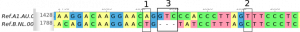
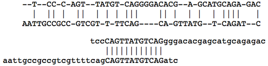

Sequence alignment
In this section, we will look at sequence alignments. We will look at the Needleman-Wunch algorithm for global alignment and also the algorithm for local alignment.
We will also later look at the algorithms and how they work, but for now, let us explore the applications.
Let’s start with the explanations from NCBI BLAST
Alignments may be classified as either global or local. A global alignment aligns two sequences from beginning to end, aligning each letter in each sequence only once. An alignment is produced, regardless of whether or not there is similarity between the sequences. A local alignment can also be used to align two sequences, but will only align those portions of the sequences that share similarity. If there is no similarity, no alignment will be returned. Local alignments algorithms (such as BLAST) are most often used. A global alignment should only be used on sequences that share significant similarity over most of their extents, and then it will sometimes return a better presentation. An example is the alignment of NP_004013 with NP_004014. These are both dystrophin isoforms, but the first sequence is missing about 100 residues starting at residue 948 (some exons have been spliced out of the corresponding mRNA). A global algorithm returns one alignment clearly showing the difference, a local algorithm returns two alignments, and it is difficult to see the change between the sequences. The global alignment at this page uses the Needleman-Wunsch algorithm. The algorithm also has optimizations to reduce memory usage.
Let’s say we want to find a pattern (sometimes referred to as a query or motif) in a sequence (mostly referred to as subject):
Pattern: CAGTTGC
Subject: AGCTTCCAGTTGCTTTCTAG
Question: Use the Pattern and Subject shown above, would you use local or global alignment to find the pattern in the subject?
Exercise: Copy and paste the above pattern and subject into any text editor, each on a new line. Use the spacebar to slide the pattern along the subject while paying attention to matching characters. Can you find the optimal alignment?
In the above exercise, the pattern is found exactly in the subject, this is not always the case, we can still do an optimum alignment in the case of substitutions and even insertions and deletions. Although exact matching algorithms are used in bioinformatics (like finding restriction sites), these will not work in most cases where we expect genetic variation.
Task 1.1: Below you will see a picture numerically marked with alignment features.

- 1 Single Nucleotide Polymorphism
- 2 Single Nucleotide Polymorphism
- 3 Deletion or insertion / InDel
Task 1.2: What is peculiar or noteworthy about the 3 rd feature from the image of an alignment above? Anyone can count to 3, that is not what I am interested in. Why 3? I want you to speculate whether the section shown in the alignment is part of a coding or non-coding area of a gene. What would be the consequence if this feature was not a multiple of 3?
Local vs global
Local alignment optimizes the best alignment between sections of the 2 sequences being aligned. Global alignments on the other hand try to optimize the alignment using all bases in both sequences and are generally used when aligning sequences of similar lengths.
Task 1.3: For each of the following situations which method will you use, local or global? (3)
- You have the sequences for all the chromosomes of a newly discovered plant and you want to find the chromosome harbouring a particular gene.
- The lab gave you the 16s rDNA sequence, they already know it is from the genus Listeria, but you want to know exactly which specie it is and you have the 16s rDNA reference sequences for all the known species of Listeria.
- One of your collaborators gave you a plasmid but did not tell you which antibiotic resistance gene it has for selective pressure. You have the sequences for the plasmid and the resistance genes of kanamycin, ampicillin and tetracycline. How would you figure this out? If you ask your collaborator this question, you will probably not collaborate again! Looking at the figure below, which do you think is global and which is local?

There also exist hybrid alignments and various other more modern algorithms for sequence alignment, but we will discuss the classics.
Practical section
Needleman-Wunsch (Global) vs Smith-Waterman (Local)
Remember fasta format?
Multiple sequence alignment
Finding the culprit in an infection
Above we looked at pairwise alignment and talked a little bit about the different algorithms. Although pairwise alignments are very useful one often needs to align multiple sequences and we will look into that in more detail in future sections. Typical reasons for multiple sequence alignment include ‘universal’ primer design and phylogenetic.
Let’s look at bacterial 16S rDNA identification.